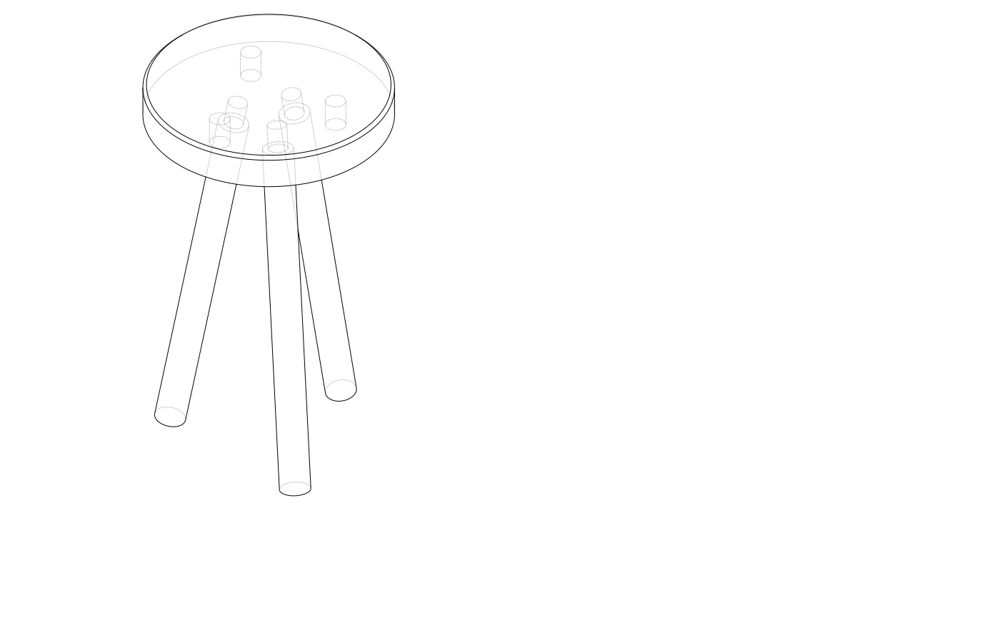
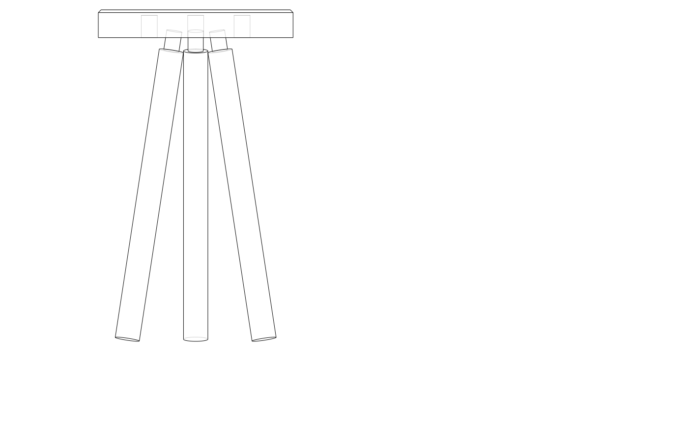
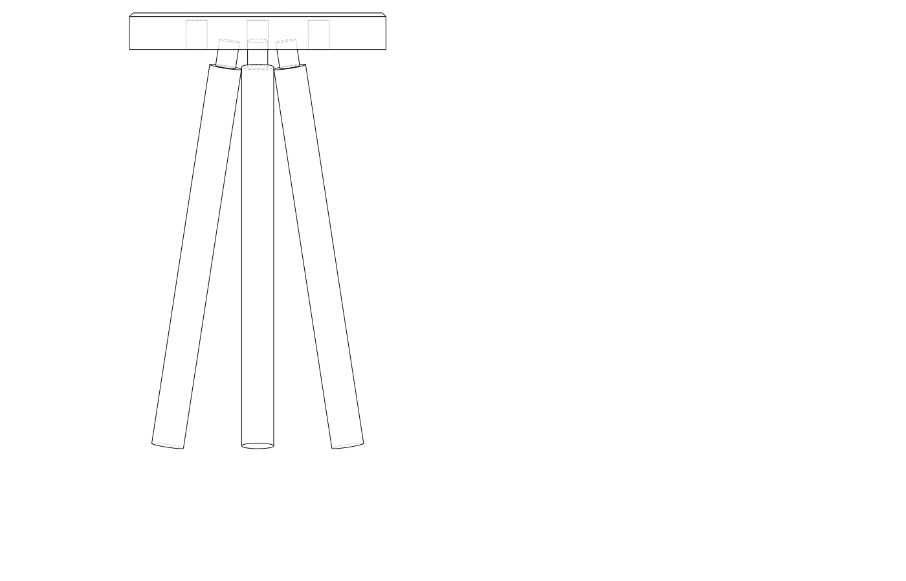
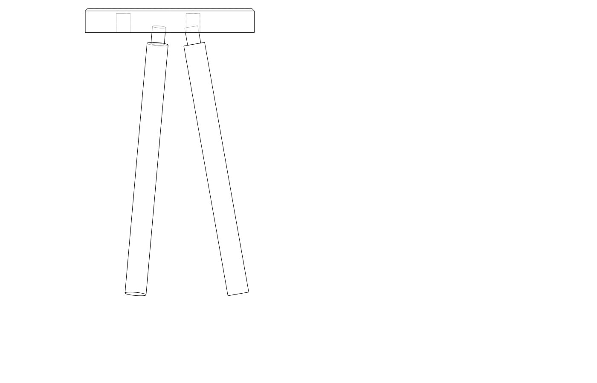
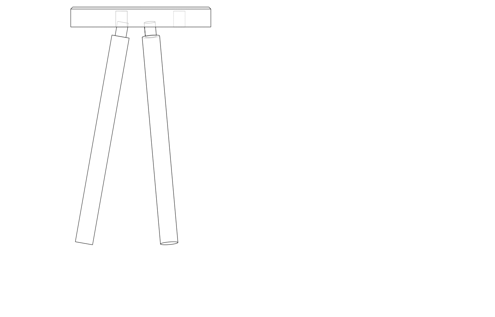
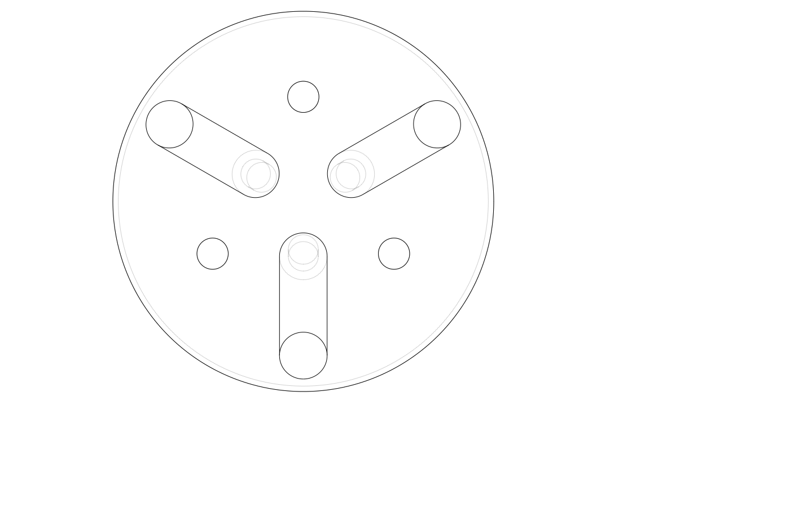

| Item | Qty | Unit | Unit price | Subtotal |
|---|---|---|---|---|
| Pine glulam or hardwood blank 300x300x50mm (seat) | 1 | piece | $22.00 | $22.00 |
| Hardwood dowel 35mm dia × 900mm (legs) | 1 | length | $18.00 | $18.00 |
| Hardwood dowel 22mm dia × 300mm (tenon stock) | 1 | length | $8.00 | $8.00 |
| Exterior PVA glue | 1 | bottle | $7.00 | $7.00 |
| Sandpaper assorted | 1 | pack | $6.00 | $6.00 |
| Total | $61.00 | |||
| Part | Qty | Dimension | Notes |
|---|---|---|---|
| Seat | 1 | 280 mm dia × 40 mm T | Cut from glulam blank or solid slab |
| Leg | 3 | 35 mm dia × ~470 mm | Slight extra length; trim to fit |
| Tenon | 3 | 22 mm dia × 32 mm | Turned or cut from dowel stock |
Leg actual length depends on splay — cut long, dry-fit, trim feet to level.
Cut seat disc — Mark centre and a 280 mm circle on the blank. Cut out with bandsaw or jigsaw. Smooth edge to the line with a spokeshave or sanding disc.
Mark mortise positions — From the underside, mark centre. Scribe a circle at 55% of seat radius (≈ 77 mm from centre). Mark three points at 120° intervals (use a protractor or divide with a compass). These are the mortise centres.
Bore mortises — Set bevel gauge to 10°. Using the boring guide block (or drill press tilted 10°), bore each mortise 32 mm deep with a 23 mm spade or auger bit (23 mm gives 1 mm clearance on the 22 mm tenon). Bore toward the outside of the seat so legs splay outward. Clean walls with a chisel.
Make tenons — If using bought 22 mm dowel, cut three 32 mm lengths. If cutting from square stock, round with a shoulder plane or spoke shave to 22 mm diameter over 32 mm length. Test-fit each into its mortise — should push in by hand with light resistance.
Cut legs to rough length — Cut three legs at ~470 mm (10 mm over finished height) to allow final trimming. Mark top and bottom ends.
Glue tenons into legs — Spread exterior PVA on tenon shank and inside mortise. Drive home with a mallet. Wipe squeeze-out immediately.
Check splay and level — Stand the stool on a flat surface. All three feet should contact simultaneously. If one rocks, mark the high foot and trim 1–2 mm at a time until level.
Final trim — With stool upright, scribe around each foot parallel to the floor (use a small block as a height gauge). Saw feet to the scribed line so they sit flat when splayed.
Sand and finish — Sand seat face through 80 → 120 → 180 grit. Break all arrises. Apply oil or wax for a shop stool, or leave bare.